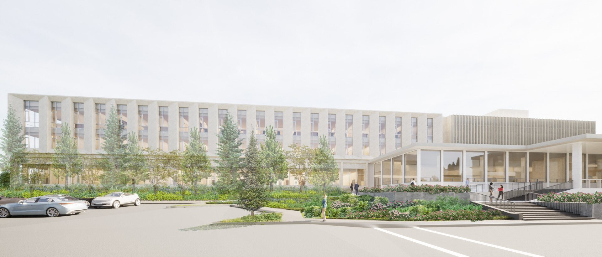
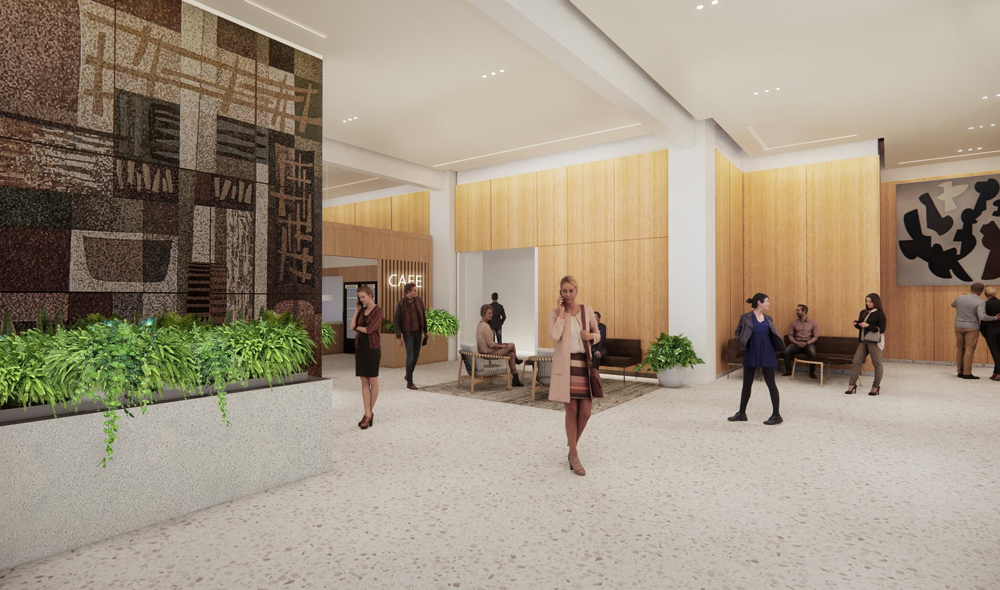
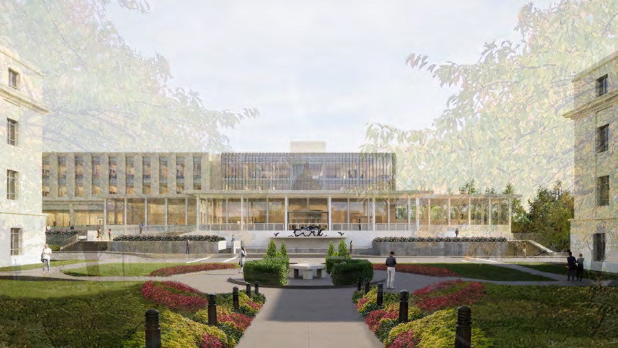
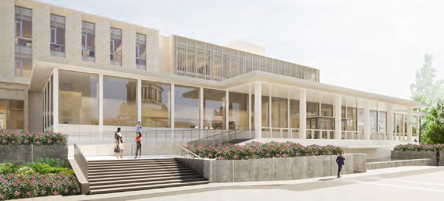

Pritchard and O'Brien Buildings

- Role
- Architectural Designer, core design team
- Office
- DLR Group
- Client
- Washington State Legislature, House of Representatives offices
- Location
- Olympia, Washington
- Size
- 77,000 sf in total: historic building and addition
- Heritage
- Former Washington State Library by Paul Thiry (1958), listed on the National Register of Historic Places
- Targets
- LEED Gold, net zero ready
- Source
- DLR Group project page
A historic landmark kept in use, with a new addition behind it.
The Pritchard Building, a concrete-framed library from the 1950s, is partly demolished and renovated, and a new three- to four-storey steel-framed addition is built behind it. The building houses administrative functions, a café and hearing rooms, and keeps the historic reading room. New first-floor windows follow the original facade.
My role
I was part of the core design team for the renovation of the historic library and for the O'Brien Building, where I led the design development work and coordinated mechanical, electrical and lighting design.



Published by DLR Group
Renderings courtesy of DLR Group. Read more on the DLR Group project page